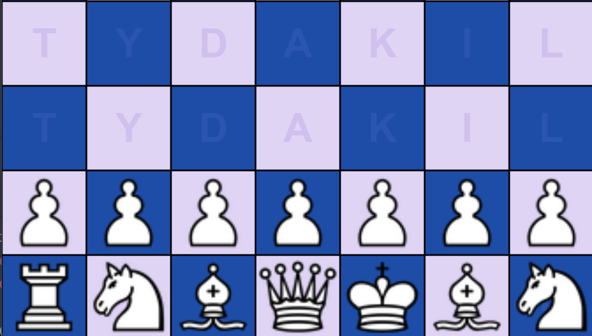

Java – Schach
Beschreibung:
Ein vollständiges Schachspiel, das in Java entwickelt wurde. Das Spiel unterstützt alle offiziellen Schachregeln inklusive Rochade, En passant und Bauernumwandlung. Zwei Spieler können abwechselnd am selben Gerät gegeneinander spielen.
Meine Aufgaben:
Ich entwarf die gesamte Klassenstruktur nach dem objektorientierten Prinzip. Jede Figur ist eine eigene Klasse mit eigener Zugvalidierungslogik. Die grafische Oberfläche wurde mit Java Swing umgesetzt.
Was ich gelernt habe:
Das Schachprojekt war eine hervorragende Übung in objektorientierter Programmierung. Die komplexe Spiellogik hat mein Verständnis für Vererbung, Polymorphismus und Entwurfsmuster erheblich vertieft. Auch das Testen und Debuggen komplexer Algorithmen wurde durch dieses Projekt gefestigt.